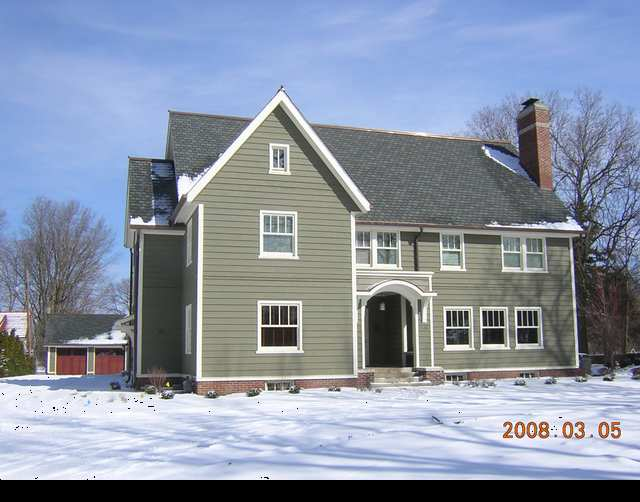

1506 E. Washington

- Frank and Gertrude Aldrich Residence (1916)
- English Arts and Crafts style, reminiscent of the work of CFA Voysey, master of the English Domestic style.
- The severity and simplicity of the lines on the 16th century English form is hat makes it stand out.
- Landscape (now removed) was by Jens Jensen.